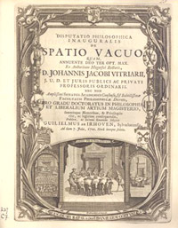

Use this link for the English
introduction
VIJF EEUWEN DISSERTATIES IN LEIDEN:
SPIEGEL VAN HET WETENSCHAPPELIJK BEDRIJF
Wie anno 2005 een promotieplechtigheid aan een Nederlandse universiteit meemaakt, bezoekt een ritueel dat tegenwoordig de afsluiting is van een jarenlang onderzoeks- en schrijfproces. In deze promotieplechtigheden staat de laatste eeuw altijd een dissertatie centraal. Niet iedereen beseft dat die dissertatie acht eeuwen voorgangers heeft onder verschillende namen, onder andere de disputatio. (1)
Hoe het ceremonieel zich in de Middeleeuwen aan een universiteit
voltrok, is bekend. Regelmatig was er een scholastieke disputatio
aan het eind van de lectiones (colleges). Vanaf het eind van de
dertiende eeuw kreeg de questio disputata, die eerst vooral een
verslag van de discussie was, een zelfstandig karakter. De disputatio
(2) werd daarmee geïnstitutionaliseerd. “Na de beginargumenten pro
en contra [ingebracht door de magister] nam een
respondens het woord om zijn positie te formuleren en te verdedigen
en om vervolgens de tegenargumenten die door de opponentes tegen
zijn redenering werden ingebracht, te weerleggen.”(3) Op een later
tijdstip werden dan in de determinatio de standpunten, argumenten
en bewijsvoeringen vastgelegd.
De disputatio als verschijnsel krijgt in later eeuwen een andere
vorm en een ander karakter.
De grondvorm blijft een openbaar wetenschappelijk debat over een omlijnd
onderwerp aan de hand van een voorliggende tekst, inclusief -tot in de
21e eeuw- een
optreden van een figuur als de opponens.
De overgeleverde teksten uit vijf eeuwen dissertaties zijn zeer divers. Ze variëren van een velletje met daarop een tiental stellingen tot boekwerken van meer dan duizend pagina’s. Ook het auteurschap is vlottend: tot in de zeventiende eeuw is van een overgeleverde disputatio zelfs mét een titelpagina niet altijd met zekerheid vast te stellen wie nu de echte auteur is. Maar ach, zelfs aan het eind van de twintigste eeuw was nog de verzuchting te horen dat de promotor het proefschrift al klaar had, maar dat de promovendus het nog niet uitgeschreven had. Wat dat betreft is er niets nieuws onder de zon.
Eeuwenlang legden auteurs van dissertaties hun gedachten vast op papier. Als beginnend wetenschapper droegen ze daarmee bij aan de vernieuwing van hun vakgebied, en soms kregen ze er zelfs de Nobelprijs voor (Marie Curie-Skłodowska in 1903). Universiteiten verzamelden deze schrifturen en in de universitaire bibliotheken werden de dissertaties in de collectie opgenomen. Vaak ook gebruikten de universiteiten de dissertaties die ter plaatse verdedigd waren als ruilobject met andere universiteiten om daarmee dissertaties, boekenreeksen of tijdschriften uit andere steden of landen, en dus de wetenschappelijke vorderingen elders, in bezit te krijgen. (4)
De Leidse universiteitsbibliotheek was op dat verschijnsel van ruil geen uitzondering, tot de gezamenlijke Nederlandse universitaire bibliothecarissen de ruil van de papieren edities in 2004 beëindigden. In de Leidse collectie zijn naar mijn schatting ongeveer 600.000 dissertaties aanwezig, zo’n 20% van het totaal aantal aanwezige boeken. (Bij die berekening stel ik het aantal titels in de Leidse catalogus op ruwweg twee miljoen en het aantal aanwezige banden op drie miljoen). Van dat half miljoen dissertaties is meer dan de helft -vooral dissertaties verdedigd aan buitenlandse universiteiten- niet gecatalogiseerd. (5)
Een kleine 100.000 van die 600.000 dissertaties zijn werken die zijn verdedigd aan Nederlandse universiteiten in de jaren tussen 1575 en 2005. De samenstelling van de Leidse collectie Nederlandse proefschriften: 15.000 dissertaties uit Leiden, 12.000 uit Utrecht, 10.000 Amsterdam, 5.000 Amsterdam (VU), 8.000 Groningen, 6.000 Nijmegen, 3.500 Delft, 3.500 Rotterdam, 2.300 Eindhoven, 1.800 Wageningen, 1.500 Maastricht, 1.200 Tilburg, enkele honderden uit Franeker, Harderwijk, Breda, Bandoeng, Apeldoorn, Deventer, Kampen en Batavia/Djakarta.. Van die bijna 100.000 zijn enkele duizenden niet gecatalogiseeerd in Leiden: dit zijn vooral dissertaties uit de zeventiende tot en met de negentiende eeuw uit de universiteitssteden Groningen, Utrecht, Amsterdam, Harderwijk, Deventer, Apeldoorn en Franeker.
De collectie buitenlandse dissertaties in Leiden is niet goed in
enkele zinnen te omschrijven. Tienduizenden dissertaties uit Duitsland,
Frankrijk, Amerika en diverse andere landen zijn gewoon in de catalogus
opgenomen en tussen de andere boeken in de universiteitsbibliotheek
geplaatst. Ze zijn niet gemakkelijk meer als dissertatie terug te
vinden.
Een groot deel van de buitenlandse dissertaties is apart in het magazijn
van de Leidse universiteitsbibliotheek geplaatst. Het is een enorme
voorraad: precies 700 kasten, 4 kilometer boeken op rij. (6) Het aantal
schat ik ergens rond de 400.000 boeken. Van het aantal buitenlandse
dissertaties is in het verleden een deel bij binnenkomst gecatalogiseerd
en elders in de bibliotheek geplaatst; een klein deel (6.000)
gecatalogiseerd en nog tussen de enorme voorraad geplaatst; het grootste
deel van de 400.000 is niet gecatalogiseerd.
Samenvattend: in Leiden zijn ongeveer 600.000 dissertaties aanwezig; van de 100.000 dissertaties verdedigd aan Nederlandse universiteiten is 95% gecatalogiseerd en dus op titel, auteur, onderwerp, vakgebied of universiteit vindbaar via de online catalogus; van de 500.000 dissertaties verdedigd aan universiteiten in andere –vooral Europese- landen is naar schatting slechts 20% gecatalogiseerd. (7)
Het bovenstaande roept zeven vragen op. Waar komen die buitenlandse dissertaties vandaan? Uit welke eeuwen dateren ze? Hoe zijn ze in Leiden terecht gekomen? Waarom is zo’n groot deel van die dissertaties niet gecatalogiseerd? Hoe compleet zijn de verzamelingen per universiteit en hoe is de situatie in andere Nederlandse bibliotheken? Wat is het belang van de collectie en zitten er nog schatten tussen die enorme hoeveelheid dissertaties verborgen? Kan deze verzameling een bron vormen voor historisch onderzoek? Hieronder zal ik op deze vragen een voorlopig antwoord proberen te geven.
Herkomst en datering
De dissertaties zijn afkomstig uit ongeveer 170 plaatsen. Twintig
daarvan liggen buiten Europa (o.a. Algiers, Baltimore en Johannesburg).
De meeste dissertaties stammen uit Duitsland (70 universiteiten) of uit
Frankrijk (35 universiteiten). Zo goed als afwezig zijn dissertaties uit
Italië, Spanje en Engeland.
De oudste in deze ongecatalogiseerde collectie aanwezige dissertaties
dateren uit het eind van de zestiende eeuw (Basel, Strasbourg). Ook uit
de zeventiende en achttiende eeuw zijn er echter duizenden aanwezig: uit
Duisburg, Erfurt, Frankfurt (a/M), Freiburg (i.Br.), Genève, Giessen,
Göttingen, Heidelberg, Jena, Kiel, Königsberg, Leuven, Marburg, Paris,
Praag, Rostock, Tübingen en diverse andere steden.
Naar Leiden
Hoe deze dissertaties hun weg naar Leiden gevonden hebben, is geen
compleet raadsel. In jaarverslagen van de Leidse
universiteitsbibliotheek uit de negentiende eeuw worden dissertaties
enkele malen bij de aanwinsten vermeld, als onderdeel van de ruil met
andere universiteiten uit binnen- en buitenland. Gezien de aantallen is
het ook zeker dat in de negentiende en twintigste eeuw de
proefschriftenruil met andere universiteiten Leiden het overgrote deel
van deze dissertaties heeft bezorgd. Ik sluit niet uit dat dat ook geldt
voor een groot deel van de dissertaties uit de eeuwen daarvoor. Mogelijk
was die ruil zelfs al onder een bibliothecaris als Fredericus Spanheim
(1672-1701) het geval. Het is echter aannemelijk dat een deel van de
werken in met name de zeventiende en de achttiende eeuw de bibliotheek
zijn binnengekomen als onderdeel van een wetenschappelijk legaat of als
schenking van hoogleraren. (8)
Niet gecatalogiseerd
Waarom bewaarde de Leidse bibliotheek die honderdduizenden dissertaties
netjes, maar catalogiseerde ze het grootste deel niet? Dat ligt
waarschijnlijk aan vier factoren. Allereerst is er natuurlijk de enorme
hoeveelheid dissertaties die binnen kwam. Ook werd in de zestiende en
zeventiende eeuw het wetenschappelijk belang van deze werken niet heel
hoog geacht, op de dissertatio pro gradu (voor een academische
graad) na. Ten derde werd een eenmaal ingezette procedure (“normaal
gesproken niet separaat catalogiseren”) mogelijk ook in Leiden
eeuwenlang gevolgd. En ten slotte waren de dissertaties, die immers
keurig per stad en daarbinnen per jaar bewaard werden, altijd opzoekbaar
als men auteur en plaats van promotie kende. Aan het eind van de
negentiende eeuw veranderde de status van het proefschrift en werden de
titels van de Nederlandse dissertaties keurig in de catalogus opgenomen;
die van de buitenlandse nog slechts voor een geselecteerd deel.
Tegenwoordig wordt het wetenschappelijk belang van dissertaties op
diverse manieren gezien: enerzijds is er kritiek op de enorme
hoeveelheid die geproduceerd wordt (250 per universiteit per jaar is
geen uitzondering); aan de andere kant is er waardering voor het
wetenschappelijk niveau. (9)
Hoe compleet is de Leidse verzameling buitenlandse dissertaties per
aanwezige universiteit?
Beter is het om hier, ondanks de enorme hoeveelheden, te spreken van de
mate van onvolledigheid. Per universiteitsstad varieert de hoeveelheid
enorm: van een tiental aanwezige dissertaties (Annaberg, Buenos Aires,
Ingolstadt, St. Petersburg) tot tientallen kásten met dissertaties (Basel,
Berlin, Duisburg, Greifswald, Heidelberg, Jena, Kiel, Marburg,
Montpellier, Strasbourg, Tübingen, Würzburg). Van Parijse dissertaties
zijn zelfs niet minder dan 120 kasten thèses aanwezig. Dat zijn
natuurlijk niet allemaal meesterwerken, maar in 2004 vonden we tussen
die massa nog 15 pareltjes, waaronder het daar niet eerder ontdekte
proefschrift van Marie Curie –het werk waarvoor ze in hetzelfde jaar de
Nobelprijs kreeg. Het stond netjes onder de S in het jaar 1903 bij de
Parijse dissertaties. Niemand had in de honderd jaar daarna de moeite
genomen onder haar eigen naam (Skłodowska) te zoeken.
Het beleid rond buitenlandse dissertaties in andere Nederlandse
universiteitsbibliotheken is nogal divers. In Groningen zijn alle
dissertaties compleet in de collectie en in de catalogus opgenomen. In
de Utrechtse universiteitsbibliotheek zijn tussen de 750.000 en 1
miljoen buitenlandse dissertaties aanwezig, veelal niet gecatalogiseerd.
(10) Ze zijn afkomstig uit Duitsland, Frankrijk, België en Scandinavië.
In de Universiteitsbibliotheek van Amsterdam is enkele jaren geleden een
opruimactie uitgevoerd: de collectie buitenlandse dissertaties (2.5 km
plank) werd doorgespit door de vakreferenten en daarna door medewerkers
van de Koninklijke Bibliotheek. Wat in het jaar 2000 als belangrijk werd
gezien, werd opgenomen in de respectievelijke collecties -in totaal
enkele tienduizenden dissertaties. De rest werd van de hand gedaan, of
-in bibliotheektermen- gedeselecteerd.
Wat is het belang van deze Leidse collectie?
Het belang van de collectie buitenlandse dissertaties in Leiden is niet
te overschatten. De collectie kan dienen voor verschillende vormen van
onderzoek. Per stad, per regio of per periode kan een onderzoeker zien
hoe een specifiek vakgebied zich ontwikkelde, hoe het wetenschappelijk
onderzoek in een bepaald gebied vastliep of juist een sprong maakte, wat
de zaken waren waar men zich wetenschappelijk mee bezig hield in een
bepaald decennium. Wie een onderzoek wil doen met als bron Duitse
dissertaties uit pakweg het jaar 1750 of 1936, kan in Leiden spitten.
Een onderzoek naar het medische onderzoek in Frankrijk tussen 1900 en
1920 is mogelijk. Verder vormen met name de duizenden zestiende- en
zeventiende-eeuwse dissertaties een zee van mogelijkheden. De
Amerikaanse historicus Joseph Freedman deed in 2004 onderzoek naar deze
werken en kwam tot enkele verrassende conclusies over veranderingen in
het wetenschappelijk proces in de zestiende en zeventiende eeuw. (11)
Verder is er een belang dat de Nederlandse grenzen overschrijdt. Van
sommige universiteitssteden worden in Leiden collecties bewaard, die op
de plaats van ontstaan inmiddels niet meer aanwezig zijn. Dit omdat
simpelweg niet alle oude dissertaties bewaard werden (ook in Leiden is
geen complete verzameling Leidse dissertaties aanwezig!); omdat de
universiteit ter plekke niet meer bestaat; omdat de betreffende
bibliotheek is vernietigd (sommige Duitse steden in WO II) of omdat door
de geografische ligging bewaren van het ‘oude’ cultuurgoed geen
prioriteit kreeg (Breslau/Wroclaw, Königsberg/Kaliningrad).
Een speurtocht naar bekende auteurs in deze collectie levert regelmatig
pareltjes op.
Wekelijks gebeurt dat door aanvragen van onderzoekers in Leiden, maar
ook op andere manieren wordt gevonden. Een gerichte zoekactie naar een
honderdtal promovendi tussen de niet-gecatalogiseerde dissertaties door
Leidse bibliotheekmedewerkers leverde in 2004 tientallen vondsten op: de
eerste schreden op het wetenschappelijk pad van eminente geleerden en
Nobelprijswinnaars als Bergson, Bohr, Curie-Skłodowska, Durkheim,
Einstein, Hahn, Lewin, Planck, Plessner, Pirandello, Stresemann,
Warburg, Weber, Wegener, maar ook van een omstreden onderzoeker als Carl
Gustav Jung. Let wel: eigenlijk zijn dit dus nieuwe aanwinsten voor de
Leidse bibliotheek uit een bestaande collectie.
Een soortgelijke zoekactie zou eigenlijk elke tien jaar herhaald moeten
worden: in 2015 kijkt men anders tegen bepaalde auteurs, bepaalde
vakgebieden en het onderzoek aan dan nu.
Geregeld systematisch onderzoek in deze enorme collectie levert
vermoedelijk ook in de komende decennia meer op dan honderden
hoogtepunten uit de wetenschappelijke wereld.
Noten:
| (1) | Het woord dissertatie gebruik ik in dit stuk als verzamelterm voor het Engelse dissertation, het Duitse Inauguraldissertation en Habilitationsschrift, het Franse thèse en het Nederlandse proefschrift en hun voorgangers, ook al ben ik me bewust van de grote onderlinge verschillen. | |
| (2) | Ook de disputatio is niet het enige woord dat voor het verschijnsel gebruikt wordt: verder valt te denken aan dissertatio, excercitatio en thesis. | |
| (3) | Olga Weijers: Begrip of tegenspraak? Analyse van een middeleeuwse onderzoekmethode. (Mededelingen KNAW, NR 65 no. 6, Amsterdam (2002) | |
| (4) | Ik spreek in de verleden tijd, omdat de universitaire bibliothecarissen in een UKB-overleg in 2004 het besluit hebben genomen om met de uitwisseling van Nederlandse dissertaties in boekvorm te stoppen. De ruil met het buitenland werd rond 1990 al stopgezet en geschiedt op dit moment nog in de vorm van een soort bestellijsten. | |
| (5) | Die enorme aantallen en percentages zijn des te opmerkelijker, omdat in de diverse geschiedenissen die over de Universiteitsbibliotheek Leiden geschreven zijn –laatstelijk Magna Commoditas in 2001- vrijwel niets over deze collectie dissertaties gemeld wordt. In het laatste jubelboek valt zelfs het woord dissertatie niet. | |
| (6) | Om precies te zijn: in het gesloten magazijn van de UB de kasten 4334-4483 en 5178-5729. | |
| (8) | Deze veronderstelling dank ik aan R. Breugelmans (september 2004); de veronderstelling wordt ondersteund door bijv. de vermelding “Ex legato Wepferi” in de Heidelbergse disputatie van Johannes Ott uit 1670: Cogitationes physico-mechanicae de natura visionis. In de Parijse dissertatie uit 1754 van Chaupin (De partium externarum generationi inservientium in mulieribus naturali, vitiosa et morbosa dispositione, theses anatomico-chirurgicae) zit een exlibris van Corn. Henr. Â Roy, medicinae doctor.] | |
| (9) | Lars H. Breimer & D. Breimer: A computer-based
international ‘Thesis-Line’? In: Trends in biochemical
sciences, vol. 20 (1995), pag. 175-176 |
|
| (10) | Informatie afkomstig van J. van Kooten Niekerk van de Universiteitsbibliotheek Utrecht (email 9 mei 2003) | |
| (11) | Zie de bijdrage van Joseph Freedman in hora_est! On dissertations. Leiden, 2005 |
| volgende pagina | |